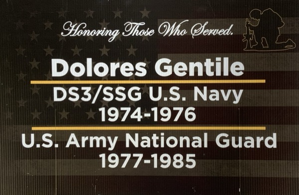
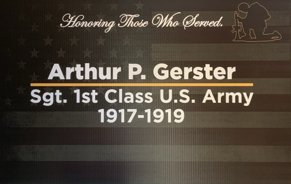
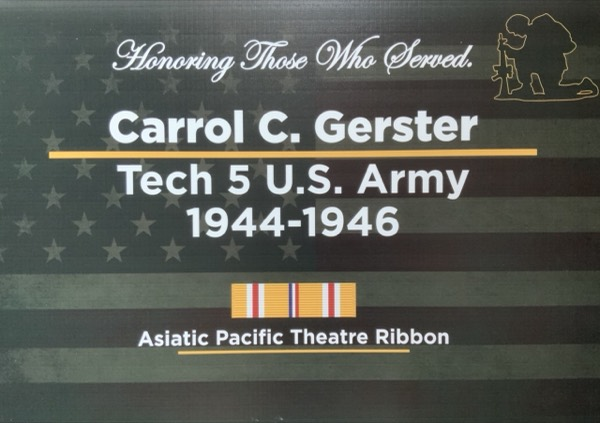
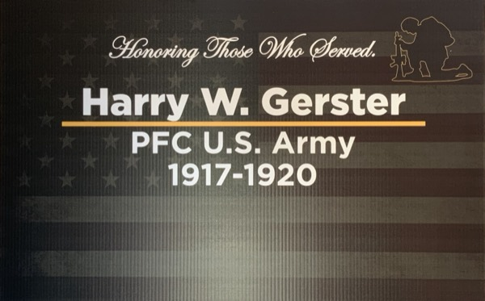
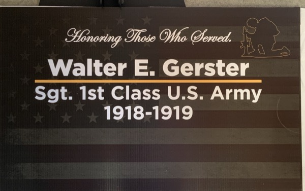
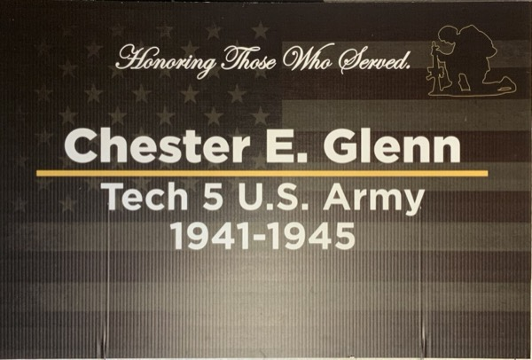
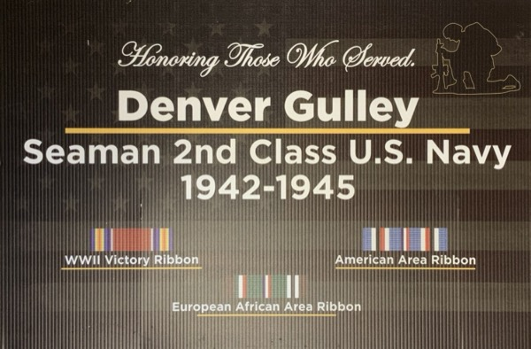

Veterans Walk: G
Honoring those who served. Select a letter to browse by last name, then select a card to view the full-size image.
Last names beginning with G · 28 records

Gentile, Dolores Gentile, Thomas
Gerster, Arthur P.
Gerster, Carrol C. Gerster, Francis Gerster, Gilbert C
Gerster, Harry W. Gerster, Leo H.
Gerster, Walter Gilbert, Walter Ray
Glenn, Chester E. Goodpaster, Robert Goodpaster, Ron Gordon, Albert T. Gordon, Anthony Gordon, Scott Grace, Donald E. Graver, Brian C. Graver, Dana L. Graver, Daniel J. Graver, David L. Graver, Jeffrey G. Graver, Mark Graver, Richard L Gray, John Guard, Norman "Whimpy"
Gulley, Denver Gutman, Anthony